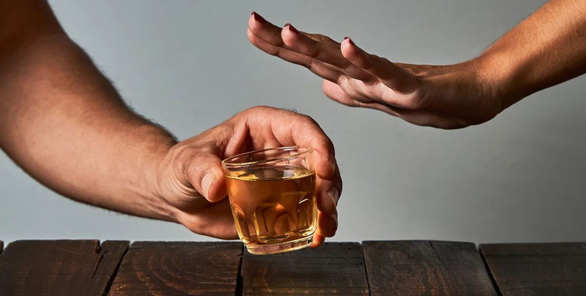
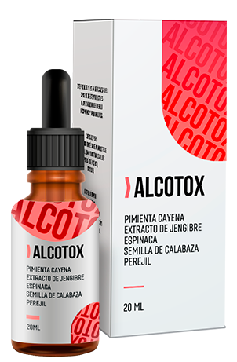

Como médico narcólogo, afirmo que todos pueden dejar de beber
Durante más de 20 años trabajé como narcólogo en una gran clínica. A lo largo de mi práctica fui capaz de ayudar a un gran número de personas en la lucha contra la adicción. Para muchos, literalmente les salvé la vida, y nunca hubiera pensado que mi hijo estaría entre ellos. Durante mucho tiempo no pude ayudarlo de las maneras que conocía y casi perdí la esperanza. Logré encontrar un nuevo método. Ahora quiero contarles a todos cómo deshacerse de la adicción y nunca volver al alcohol de nuevo.

Mirando hacia atrás, veo la clínica, los pacientes, los seminarios y los congresos eran más importantes que mi propia familia. Me entregaba completamente a otras personas y olvidé mi vida. Tal vez es por eso que mi hijo se convirtió en mi paciente, debido a un deseo inconsciente de estar más cerca de mí. Las dificultades familiares y los conflictos entre los seres queridos son una de las principales causas del alcoholismo. Y solo después aparecen los problemas laborales, financieros y personales, alteraciones psicológicas y fisiológicas.
Mi esposa y yo hicimos todo lo posible para darle a mi hijo una buena educación y una vida digna. Solo ahora me doy cuenta de que no había tenido suficiente comunicación conmigo. Luego en la Universidad probó el alcohol y no pudo parar. Al principio logró ocultar su problema con el alcohol...
Recuerdo el día en que me llamaron y me abrieron los ojos. Hace seis meses, su hijo fue expulsado y comenzó a beber todos los días. Y la cosa siguió como debía, lo dejó la novia, las peleas de borrachos en bares, el comportamiento inmoral y los primeros problemas con la ley. Y todo esto no lo sabía y ni siquiera lo podía imaginar...

Nos esperaban dos años de difícil rehabilitación. Hice todo lo posible para ayudarlo. Mi hijo fue tratado, se desintoxicó, asistió a cursos de psicoterapia. Después de un tiempo, notamos mejoras. Fue dado de alta e inmediatamente se fue al Bar. Lo peor no fueron las burlas de la gente, sobre que era un mal narcólogo y no puedo curar a mi propio hijo, sino que realmente era impotente y mi hijo se envenenaba a sí mismo todos los días y arruinaba su vida.
Con el tiempo, el psicólogo nos ayudó a mejorar nuestra relación. Mi hijo admitió que ya no estaba enojado conmigo. Simplemente dejar de beber estaba por fuera de sus fuerzas Es como si alguien lo obligara a hacerlo y no pudiera parar. Es decir, el problema no era psicológico, sino una dependencia física, que no podía eliminarse de ninguna manera. Por supuesto que sabía que esto sucedía. Los tratamientos tradicionales, que se practican en todo el mundo, no ayudarban... y comencé a buscar otra técnica que no se pareciera a nada anterior.

En una de las conferencias en línea, habló un médico narcólogo desconocido hasta entonces sobre el tema que necesitaba. El nuevo prodcuto había mostrado unas estadísticas excepcionales sobre el tratamiento del alcoholismo y ya se ha agregado a la terapia en los países vecinos.

entonces, ¿de qué me enteré? no contiene bloqueadores, tranquilizantes y otras sustancias habituales. Contiene extractos naturales que realizan funciones básicas en la terapia contra la dependencia del alcohol:
- producen una reacción natural de rechazo al alcohol;
- mejoran las funciones cognitivas y del habla;
- alivian los síntomas del síndrome de abstinencia;
- mejoran el estado anímico al eliminar los signos de agresión y depresión;
- limpian la sangre y los vasos sanguíneos;
- eliminan las sustancias tóxicas del cuerpo.
A mí, como especialista con bastante experiencia, me resultó difícil creerlo. Este efecto no se puede lograr con ningún medicamento, solo con un trabajo complejo. Como probé todos los métodos conocidos y no ayudaron, decidí darle a mi hijo Alcotox .
mi hijo ha lo bebió durante dos semanas. Por la mañana, para aliviar el síndrome de resaca, le daba Alcotox . A la hora, se bañaba y salía a desayunar. Por primera vez en mucho tiempo, no se sentía mal. Y es cierto que sus manos no temblaban, su voz era firme, sus pupilas estaban normales. No había signos de resaca. Incluso bromeaba y sonreía, como si ayer no hubiera estado borracho en un charco de su propio vómito…

después de dos semanas de tomar el medicamento, mi hijo no se quebró, sino que continuó un estilo de vida normal. Mi hijo fue examinado y sus pruebas me sorprendieron: todos los indicadores eran normales, su sangre estaba libre de toxinas y desechos. Y lo más importante, fue que mi hijo dejó de beber. ¿Por mucho tiempo? Resultó que sí.
Una semana más tarde, admitió que no creía que el nuevo tratamiento ayudaría, comenzó a tomarlo solo por mí. Y luego dejé de pensar en que quería beber. Le aparecieron pensamientos positivos, su estado general en sí mejoró. Incluso comenzó a buscar trabajo y volver al estudio para el próximo año.
Han psado seis meses desde que mi hijo comenzó a beber Alcotox . Durante este tiempo, nunca tocó el trago y volvió a la normalidad.Ahora ayudo incluso a aquellos que creía que eran pacientes sin esperanza. Logré concretar el envío de Alcotox a nuestro país. ¡Y hasta más! Ahora cualquiera puede pedirlo directamente en la página web del fabricante sin pagos extra e impuestos.
Si usted o sus seres queridos no pueden deshacerse de la adicción y han perdidoprácticamente la esperanza... ¡Sepa que siempre hay una salida! Recientemente yo mismo estuve en su lugar , aunque pensaba quepor mi profesión, esto nunca sucedería. En la vida puede ocurrir de todo. Sé cuánto gastan las personas en rehabilitación. En la mayoría de los casos, esas sumas tan grandes no las tiene el 85% de los pacientes. Quiero ayudar a todos y dar un 50% de descuento en Alcotox . Al adquirir este producto, se despedirá para siempre del alcohol.